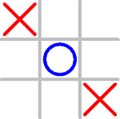
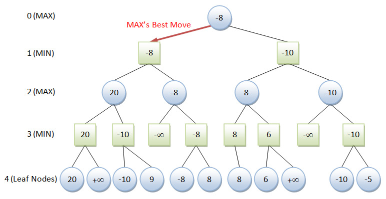
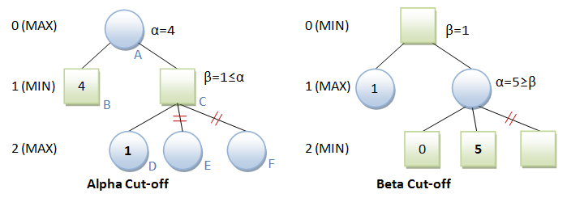

Playing Against Computer with AI (Advanced)
Click the image to run the demo for the various AI strategies (under the "Options" menu):
Tic-tac-toe seems dumb, but it actually requires you to lookahead one opponent's move to ensure that you will not loss. That is, you need to consider your opponent's move after your next move.
For example, suppose that the computer uses 'O'. At (D), the computer did not consider the opponent's next move and place at the corner (which is preferred over the side). At (E), the opponent was able to block the computer's winning move and create a fork.
X | | X | | X | | X | | X | | X
----------- ----------- ----------- ----------- -----------
| | | O | | O | | O | | O |
----------- ----------- ----------- ----------- -----------
| | | | | | X O | | X O | | X
(A) (B) (C) (D) (E)
Implementing the AI Player
To test the various AI strategies, an abstract superclass called AIPlayer is defined, which takes the Board as an argument in its constructor (because you need the board position to compute the next move). An abstract method called move() is defined, which shall be implemented in subclasses with the chosen strategy.
1 2 3 4 5 6 7 8 9 10 11 12 13 14 15 16 17 18 19 20 21 22 23 24 25 26 27 28 29 30 31 32 33 |
/** * Abstract superclass for all AI players with different strategies. * To construct an AI player: * 1. Construct an instance (of its subclass) with the game Board * 2. Call setSeed() to set the computer's seed * 3. Call move() which returns the next move in an int[2] array of {row, col}. * * The implementation subclasses need to override abstract method move(). * They shall not modify Cell[][], i.e., no side effect expected. * Assume that next move is available, i.e., not game-over yet. */ public abstract class AIPlayer { protected int ROWS = GameMain.ROWS; // number of rows protected int COLS = GameMain.COLS; // number of columns protected Cell[][] cells; // the board's ROWS-by-COLS array of Cells protected Seed mySeed; // computer's seed protected Seed oppSeed; // opponent's seed /** Constructor with reference to game board */ public AIPlayer(Board board) { cells = board.cells; } /** Set/change the seed used by computer and opponent */ public void setSeed(Seed seed) { this.mySeed = seed; oppSeed = (mySeed == Seed.CROSS) ? Seed.NOUGHT : Seed.CROSS; } /** Abstract method to get next move. Return int[2] of {row, col} */ abstract int[] move(); // to be implemented by subclasses } |
Simplest Strategy – Heuristic Preferences via Table Lookup
The simplest computer strategy is to place the seed on the first empty cell in this order: the center, one of the four corners, one of the four sides. This dumb strategy, of course, does not work. It merely gets you started programming the computer play.
For example,
1 2 3 4 5 6 7 8 9 10 11 12 13 14 15 16 17 18 19 20 21 22 23 24 25 26 27 28 29 30 |
/** * Computer move based on simple table lookup of preferences */ public class AIPlayerTableLookup extends AIPlayer { // Moves {row, col} in order of preferences. {0, 0} at top-left corner private int[][] preferredMoves = { {1, 1}, {0, 0}, {0, 2}, {2, 0}, {2, 2}, {0, 1}, {1, 0}, {1, 2}, {2, 1}}; /** constructor */ public AIPlayerTableLookup(Board board) { super(board); } /** Search for the first empty cell, according to the preferences * Assume that next move is available, i.e., not gameover * @return int[2] of {row, col} */ @Override public int[] move() { for (int[] move : preferredMoves) { if (cells[move[0]][move[1]].content == Seed.EMPTY) { return move; } } assert false : "No empty cell?!"; return null; } } |
Heuristic Board Evaluation Function
In this strategy, we need to formula a heuristic evaluation function, which returns a relative score, e.g., +∞ for computer-win, -∞ for opponent-win, 0 for neutral, and a number in between to indicate the relative advantage of the computer vs. the opponent.
In Tic-Tac-Toe, a possible heuristic evaluation function for the current board position is:
- +100 for EACH 3-in-a-line for computer.
- +10 for EACH two-in-a-line (with a empty cell) for computer.
- +1 for EACH one-in-a-line (with two empty cells) for computer.
- Negative scores for opponent, i.e., -100, -10, -1 for EACH opponent's 3-in-a-line, 2-in-a-line and 1-in-a-line.
- 0 otherwise (empty lines or lines with both computer's and opponent's seeds).
For Tic-Tac-Toe, compute the scores for each of the 8 lines (3 rows, 3 columns and 2 diagonals) and obtain the sum.
For an Othello (Reversi), the heuristic evaluation function could be the difference of computer's seeds over opponent's seeds.
To implement this strategy, you need to compute the score for all the valid moves, and place the seed at the position with the highest score. This strategy does not work in Tic-Tac-Toe (and in most of the board game) because it does not lookahead opponent's next move.
Rule-based Strategy
For Tic-tac-toe, the rules, in the order of importance, are:
- Rule 1: If I have a winning move, take it.
- Rule 2: If the opponent has a winning move, block it.
- Rule 3: If I can create a fork (two winning ways) after this move, do it.
- Rule 4: Do not let the opponent creating a fork after my move. (Opponent may block your winning move and create a fork.)
- Rule 5: Place in the position such as I may win in the most number of possible ways.
Rule 1 and 2 can be programmed easily. Rule 3 is harder. Rule 4 is even harder because you need to lookahead one opponent move, after your move. For rule 5, you need to count the number of possible winning ways.
Rule-based strategy is only applicable for simple game such as Tic-tac-toe and Othello.
Minimax Search Algorithm
Reference: Wiki "Minimax".
First, decide on a heuristic board evaluation function (see above section).
For Tic-Tac-Toe, the function could be as simple as returning +1 if the computer wins, -1 if the player wins, or 0 otherwise. However, simple evaluation function may require deeper search.
A better evaluation function for Tic-Tac-Toe is:
- +100 for EACH 3-in-a-line for computer.
- +10 for EACH 2-in-a-line (with a empty cell) for computer.
- +1 for EACH 1-in-a-line (with two empty cells) for computer.
- Negative scores for opponent, i.e., -100, -10, -1 for EACH opponent's 3-in-a-line, 2-in-a-line and 1-in-a-line.
- 0 otherwise (empty lines or lines with both computer's and opponent's seed).
Compute the scores for each of the 8 lines (3 rows, 3 columns and 2 diagonals) and obtain the sum.
The principle of minimax is to minimize the maximum possible loss.
As an illustration, suppose that there are only one or two possible moves per player in each turn. Furthermore, an evaluation function has been defined, which returns +∞ if the computer wins, -∞ if the computer loses, and a score in between to reflect the relative advantage of the computer. Computer (or the maximizing player) is represented by circle. The opponent (or the minimizing player) is represented by square. We limit the lookahead to four moves.
The algorithm evaluates the leaf nodes (terminating "gameover" nodes or at maximum depth of 4) using the heuristic evaluation function, obtaining the values shown. At level 3, the minimizing player will choose, for each node, the minimum of its children. In level 2, the maximizing player chooses the maximum of the children. The algorithm continues evaluating the maximum and minimum values of the child nodes alternately until it reaches the root node, where it chooses the move with the maximum value. This is the move that the player should make in order to minimize the maximum possible loss.
Minimax is recursive. The algorithm is as follows:
minimax(level, player) // player may be "computer" or "opponent" if (gameover || level == 0) return score children = all legal moves for this player if (player is computer, i.e., maximizing player) // find max bestScore = -inf for each child score = minimax(level - 1, opponent) if (score > bestScore) bestScore = score return bestScore else (player is opponent, i.e., minimizing player) // find min bestScore = +inf for each child score = minimax(level - 1, computer) if (score < bestScore) bestScore = score return bestScore // Initial Call minimax(2, computer)
1 2 3 4 5 6 7 8 9 10 11 12 13 14 15 16 17 18 19 20 21 22 23 24 25 26 27 28 29 30 31 32 33 34 35 36 37 38 39 40 41 42 43 44 45 46 47 48 49 50 51 52 53 54 55 56 57 58 59 60 61 62 63 64 65 66 67 68 69 70 71 72 73 74 75 76 77 78 79 80 81 82 83 84 85 86 87 88 89 90 91 92 93 94 95 96 97 98 99 100 101 102 103 104 105 106 107 108 109 110 111 112 113 114 115 116 117 118 119 120 121 122 123 124 125 126 127 128 129 130 131 132 133 134 135 136 137 138 139 140 141 142 143 144 145 146 147 148 149 150 151 152 153 154 155 156 157 158 159 160 161 162 163 164 165 166 167 168 169 170 171 172 |
import java.util.*; /** AIPlayer using Minimax algorithm */ public class AIPlayerMinimax extends AIPlayer { /** Constructor with the given game board */ public AIPlayerMinimax(Board board) { super(board); } /** Get next best move for computer. Return int[2] of {row, col} */ @Override int[] move() { int[] result = minimax(2, mySeed); // depth, max turn return new int[] {result[1], result[2]}; // row, col } /** Recursive minimax at level of depth for either maximizing or minimizing player. Return int[3] of {score, row, col} */ private int[] minimax(int depth, Seed player) { // Generate possible next moves in a List of int[2] of {row, col}. List<int[]> nextMoves = generateMoves(); // mySeed is maximizing; while oppSeed is minimizing int bestScore = (player == mySeed) ? Integer.MIN_VALUE : Integer.MAX_VALUE; int currentScore; int bestRow = -1; int bestCol = -1; if (nextMoves.isEmpty() || depth == 0) { // Gameover or depth reached, evaluate score bestScore = evaluate(); } else { for (int[] move : nextMoves) { // Try this move for the current "player" cells[move[0]][move[1]].content = player; if (player == mySeed) { // mySeed (computer) is maximizing player currentScore = minimax(depth - 1, oppSeed)[0]; if (currentScore > bestScore) { bestScore = currentScore; bestRow = move[0]; bestCol = move[1]; } } else { // oppSeed is minimizing player currentScore = minimax(depth - 1, mySeed)[0]; if (currentScore < bestScore) { bestScore = currentScore; bestRow = move[0]; bestCol = move[1]; } } // Undo move cells[move[0]][move[1]].content = Seed.EMPTY; } } return new int[] {bestScore, bestRow, bestCol}; } /** Find all valid next moves. Return List of moves in int[2] of {row, col} or empty list if gameover */ private List<int[]> generateMoves() { List<int[]> nextMoves = new ArrayList<int[]>(); // allocate List // If gameover, i.e., no next move if (hasWon(mySeed) || hasWon(oppSeed)) { return nextMoves; // return empty list } // Search for empty cells and add to the List for (int row = 0; row < ROWS; ++row) { for (int col = 0; col < COLS; ++col) { if (cells[row][col].content == Seed.EMPTY) { nextMoves.add(new int[] {row, col}); } } } return nextMoves; } /** The heuristic evaluation function for the current board @Return +100, +10, +1 for EACH 3-, 2-, 1-in-a-line for computer. -100, -10, -1 for EACH 3-, 2-, 1-in-a-line for opponent. 0 otherwise */ private int evaluate() { int score = 0; // Evaluate score for each of the 8 lines (3 rows, 3 columns, 2 diagonals) score += evaluateLine(0, 0, 0, 1, 0, 2); // row 0 score += evaluateLine(1, 0, 1, 1, 1, 2); // row 1 score += evaluateLine(2, 0, 2, 1, 2, 2); // row 2 score += evaluateLine(0, 0, 1, 0, 2, 0); // col 0 score += evaluateLine(0, 1, 1, 1, 2, 1); // col 1 score += evaluateLine(0, 2, 1, 2, 2, 2); // col 2 score += evaluateLine(0, 0, 1, 1, 2, 2); // diagonal score += evaluateLine(0, 2, 1, 1, 2, 0); // alternate diagonal return score; } /** The heuristic evaluation function for the given line of 3 cells @Return +100, +10, +1 for 3-, 2-, 1-in-a-line for computer. -100, -10, -1 for 3-, 2-, 1-in-a-line for opponent. 0 otherwise */ private int evaluateLine(int row1, int col1, int row2, int col2, int row3, int col3) { int score = 0; // First cell if (cells[row1][col1].content == mySeed) { score = 1; } else if (cells[row1][col1].content == oppSeed) { score = -1; } // Second cell if (cells[row2][col2].content == mySeed) { if (score == 1) { // cell1 is mySeed score = 10; } else if (score == -1) { // cell1 is oppSeed return 0; } else { // cell1 is empty score = 1; } } else if (cells[row2][col2].content == oppSeed) { if (score == -1) { // cell1 is oppSeed score = -10; } else if (score == 1) { // cell1 is mySeed return 0; } else { // cell1 is empty score = -1; } } // Third cell if (cells[row3][col3].content == mySeed) { if (score > 0) { // cell1 and/or cell2 is mySeed score *= 10; } else if (score < 0) { // cell1 and/or cell2 is oppSeed return 0; } else { // cell1 and cell2 are empty score = 1; } } else if (cells[row3][col3].content == oppSeed) { if (score < 0) { // cell1 and/or cell2 is oppSeed score *= 10; } else if (score > 1) { // cell1 and/or cell2 is mySeed return 0; } else { // cell1 and cell2 are empty score = -1; } } return score; } private int[] winningPatterns = { 0b111000000, 0b000111000, 0b000000111, // rows 0b100100100, 0b010010010, 0b001001001, // cols 0b100010001, 0b001010100 // diagonals }; /** Returns true if thePlayer wins */ private boolean hasWon(Seed thePlayer) { int pattern = 0b000000000; // 9-bit pattern for the 9 cells for (int row = 0; row < ROWS; ++row) { for (int col = 0; col < COLS; ++col) { if (cells[row][col].content == thePlayer) { pattern |= (1 << (row * COLS + col)); } } } for (int winningPattern : winningPatterns) { if ((pattern & winningPattern) == winningPattern) return true; } return false; } } |
Note: The pseudocode presented in Wiki "minimax" is known as "negamax", which is very hard to understand, and even harder to program and debug.
Minimax with Alpha-beta Pruning
Reference: Wiki "Alpha-beta pruning".
Alpha-beta pruning seeks to reduce the number of nodes that needs to be evaluated in the search tree by the minimax algorithm. For example in the alpha cut-off, since node D returns 1, node C (MIN) cannot be more than 1. But node B is 4. There is no need to search the other children of node C, as node A will certainly pick node B over node C.
In the algorithm, two parameters are needed: an alpha value which holds the best MAX value found for MAX node; and a beta value which holds the best MIN value found for MIN node. As illustrated, the remaining children can be aborted if alpha ≥ beta, for both the alpha cut-off and beta cut-off. Alpha and beta are initialized to -∞ and +∞ respectively.
The recursive algorithm for "minimax with alpha-beta pruning" is as follows:
minimax(level, player, alpha, beta) // player may be "computer" or "opponent" if (gameover || level == 0) return score children = all valid moves for this "player" if (player is computer, i.e., max's turn) // Find max and store in alpha for each child score = minimax(level - 1, opponent, alpha, beta) if (score > alpha) alpha = score if (alpha >= beta) break; // beta cut-off return alpha else (player is opponent, i.e., min's turn) // Find min and store in beta for each child score = minimax(level - 1, computer, alpha, beta) if (score < beta) beta = score if (alpha >= beta) break; // alpha cut-off return beta // Initial call with alpha=-inf and beta=inf minimax(2, computer, -inf, +inf)
The relevant changes (over the AIPlayerMinimax.java) are:
/** Get next best move for computer. Return int[2] of {row, col} */ @Override int[] move() { int[] result = minimax(2, mySeed, Integer.MIN_VALUE, Integer.MAX_VALUE); // depth, max-turn, alpha, beta return new int[] {result[1], result[2]}; // row, col } /** Minimax (recursive) at level of depth for maximizing or minimizing player with alpha-beta cut-off. Return int[3] of {score, row, col} */ private int[] minimax(int depth, Seed player, int alpha, int beta) { // Generate possible next moves in a list of int[2] of {row, col}. List<int[]> nextMoves = generateMoves(); // mySeed is maximizing; while oppSeed is minimizing int score; int bestRow = -1; int bestCol = -1; if (nextMoves.isEmpty() || depth == 0) { // Gameover or depth reached, evaluate score score = evaluate(); return new int[] {score, bestRow, bestCol}; } else { for (int[] move : nextMoves) { // try this move for the current "player" cells[move[0]][move[1]].content = player; if (player == mySeed) { // mySeed (computer) is maximizing player score = minimax(depth - 1, oppSeed, alpha, beta)[0]; if (score > alpha) { alpha = score; bestRow = move[0]; bestCol = move[1]; } } else { // oppSeed is minimizing player score = minimax(depth - 1, mySeed, alpha, beta)[0]; if (score < beta) { beta = score; bestRow = move[0]; bestCol = move[1]; } } // undo move cells[move[0]][move[1]].content = Seed.EMPTY; // cut-off if (alpha >= beta) break; } return new int[] {(player == mySeed) ? alpha : beta, bestRow, bestCol}; } }
REFERENCES & RESOURCES
- Wiki "Minimax" and "Alpha-beta pruning"
- Dong Xiang, "Solve Tic Tac Toe with the MiniMax algorithm" @ http://www.codeproject.com/Articles/43622/Solve-Tic-Tac-Toe-with-the-MiniMax-algorithm.
- "Minimax Explained" @ http://ai-depot.com/articles/minimax-explained.